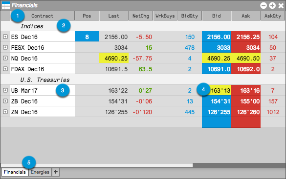

There are settings and options available in the Market Grid widget that provide the ability to visualize instruments and market data activity.

The following display options are available:
- Columns — Show or hide columns that are specific to your markets or instruments.
- Label Rows — Provide visual cues in a grid with many rows.
- Color rows by year — Differentiate instruments expiring in successive 12-month cycles.
- Highlight Updates — Highlight the Last, Bid, and Ask values when price updates occur.
- Tabs — Organize your instruments by showing and
using tabs.